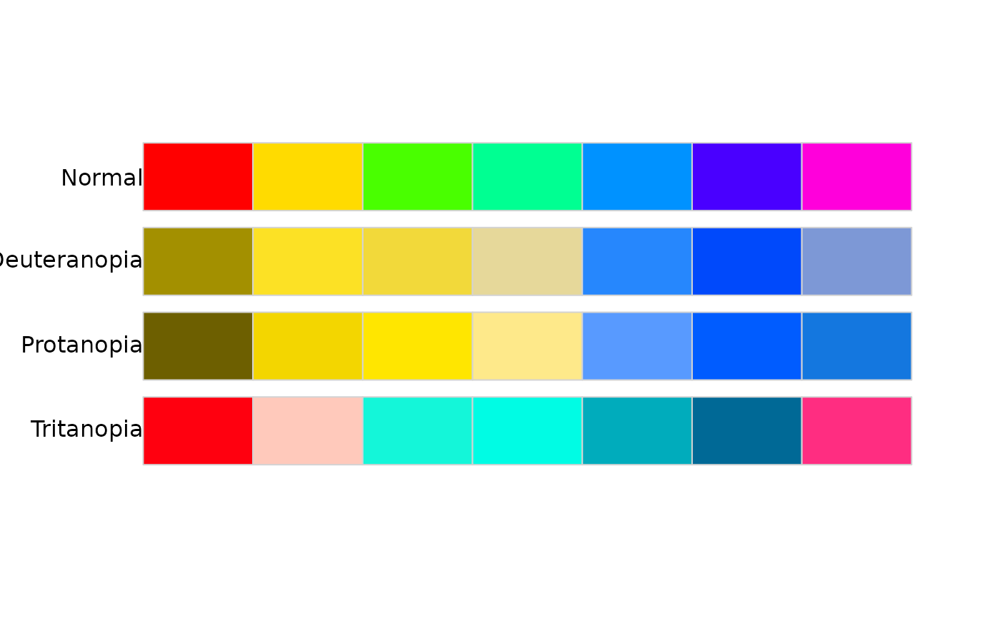
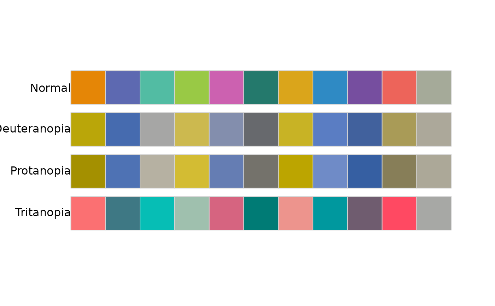
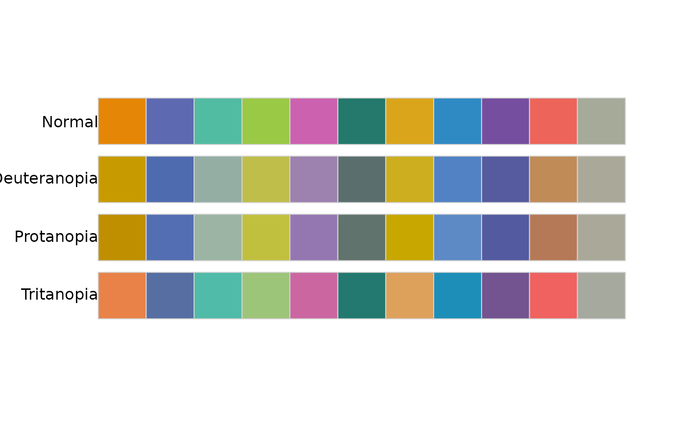
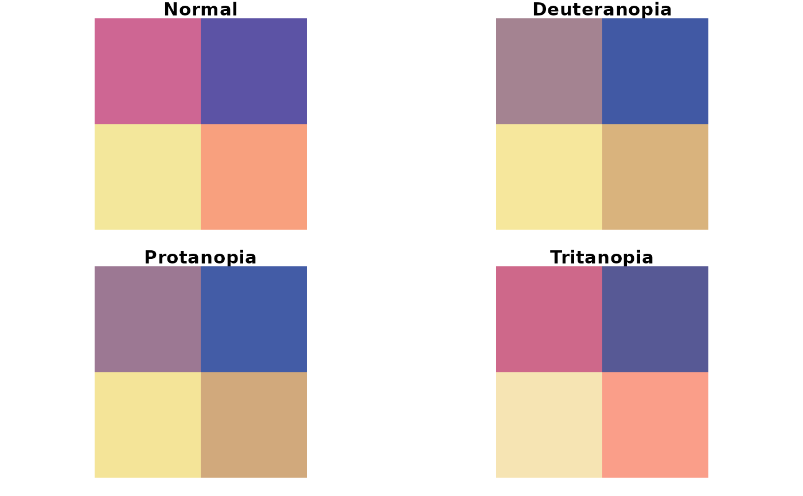

Comparision of the original input palette and simulations of color vision deficiencies - deuteranopia, protanopia, and tritanopia.
Arguments
- x
A vector of hexadecimal color descriptions
- tolerance
The minimal value of acceptable difference between the colors to distinguish between them. As the default, minimal distance between colors in the original input palette is given.
- plot
If TRUE, display a plot comparing the original input palette and simulations of color vision deficiencies - deuteranopia, protanopia, and tritanopia
- bivariate
If TRUE (and plot = TRUE), display a bivariate plot (plot where colors are located in columns and rows) comparing the original input palette and simulations of color vision deficiencies - deuteranopia, protanopia, and tritanopia
- severity
Severity of the color vision defect, a number between 0 and 1
- ...
Other arguments passed on to
palette_dist()to control the color metric
Value
A data.frame with 4 observations and 8 variables:
name: orginal input color palette (normal), deuteranopia, protanopia, and tritanopia
n: number of colors
tolerance: minimal value of acceptable difference between the colors to distinguish between them
ncp: number of color pairs
ndcp: number of differentiable color pairs (color pairs with distances above the tolerance value)
min_dist: minimal distance between colors
mean_dist: average distance between colors
max_dist: maximal distance between colors
Additionally, a plot comparing the original input palette and simulations of color vision deficiencies - deuteranopia, protanopia, and tritanopia can be shown.
Examples
rainbow_pal = rainbow(n = 7)
rainbow_pal
#> [1] "#FF0000" "#FFDB00" "#49FF00" "#00FF92" "#0092FF" "#4900FF" "#FF00DB"
palette_check(rainbow_pal, plot = TRUE)

#> name n tolerance ncp ndcp min_dist mean_dist max_dist
#> 1 normal 7 12.13226 21 21 12.132257 61.06471 107.63470
#> 2 deuteranopia 7 12.13226 21 19 2.572062 44.29065 85.87461
#> 3 protanopia 7 12.13226 21 17 3.647681 47.63882 83.28286
#> 4 tritanopia 7 12.13226 21 20 2.025647 47.41585 83.77189
x = rcartocolor::carto_pal(11, "Vivid")
palette_check(x)
#> name n tolerance ncp ndcp min_dist mean_dist max_dist
#> 1 normal 11 12.84607 55 55 12.846069 40.02555 77.24506
#> 2 deuteranopia 11 12.84607 55 44 3.746439 29.90801 60.27005
#> 3 protanopia 11 12.84607 55 46 2.760351 30.25902 63.13637
#> 4 tritanopia 11 12.84607 55 47 6.571998 34.97722 70.26305
palette_check(x, plot = TRUE)

#> name n tolerance ncp ndcp min_dist mean_dist max_dist
#> 1 normal 11 12.84607 55 55 12.846069 40.02555 77.24506
#> 2 deuteranopia 11 12.84607 55 44 3.746439 29.90801 60.27005
#> 3 protanopia 11 12.84607 55 46 2.760351 30.25902 63.13637
#> 4 tritanopia 11 12.84607 55 47 6.571998 34.97722 70.26305
palette_check(x, tolerance = 1)
#> name n tolerance ncp ndcp min_dist mean_dist max_dist
#> 1 normal 11 1 55 55 12.846069 40.02555 77.24506
#> 2 deuteranopia 11 1 55 55 3.746439 29.90801 60.27005
#> 3 protanopia 11 1 55 55 2.760351 30.25902 63.13637
#> 4 tritanopia 11 1 55 55 6.571998 34.97722 70.26305
palette_check(x, tolerance = 10, metric = 1976)
#> name n tolerance ncp ndcp min_dist mean_dist max_dist
#> 1 normal 11 10 55 55 12.846069 40.02555 77.24506
#> 2 deuteranopia 11 10 55 51 4.993172 53.81809 112.91085
#> 3 protanopia 11 10 55 50 3.518865 54.47734 115.19857
#> 4 tritanopia 11 10 55 55 13.292920 52.88886 115.96152
palette_check(x, plot = TRUE, severity = 0.5)

#> name n tolerance ncp ndcp min_dist mean_dist max_dist
#> 1 normal 11 12.84607 55 55 12.846069 40.02555 77.24506
#> 2 deuteranopia 11 12.84607 55 50 6.103704 32.82212 64.36700
#> 3 protanopia 11 12.84607 55 50 7.784385 33.23662 66.63678
#> 4 tritanopia 11 12.84607 55 54 12.257169 36.58599 64.40300
y = rcartocolor::carto_pal(4, "Sunset")
palette_check(y, plot = TRUE, bivariate = TRUE, severity = 0.5)

#> name n tolerance ncp ndcp min_dist mean_dist max_dist
#> 1 normal 4 28.27696 6 6 28.27696 42.88452 67.75598
#> 2 deuteranopia 4 28.27696 6 5 14.45979 39.20407 65.55729
#> 3 protanopia 4 28.27696 6 4 17.35196 39.44005 64.27717
#> 4 tritanopia 4 28.27696 6 4 22.10219 37.92613 58.17007